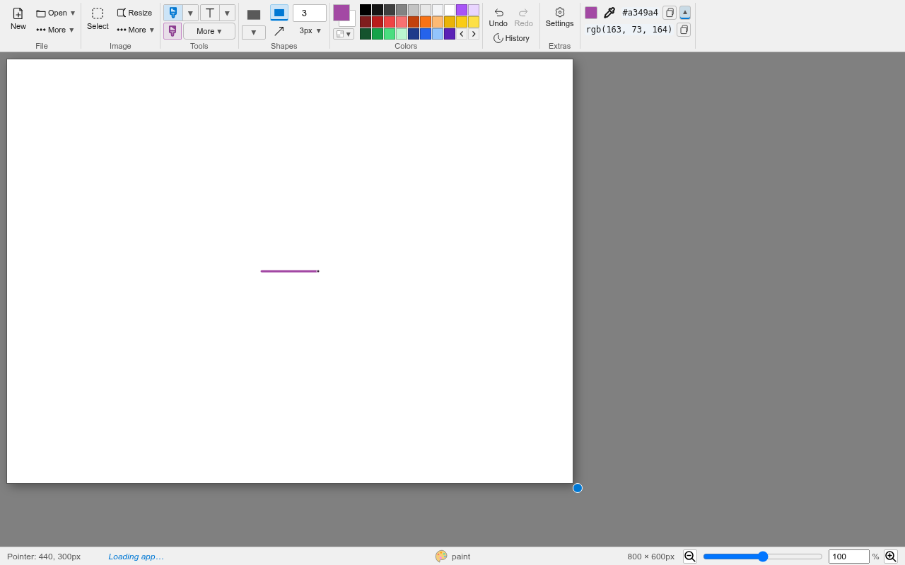

Status: FAILED · Run: example-controlled-failure
Started: 2026-11-21T19:58:07.219Z · Duration: 4035 ms
Failed step: Example only: fail an intentionally incorrect canvas-size assertion
Intentional example failure: expected 801x600; actual canvas is 800x600.
+ actual - expected
[
+ 800,
- 801,
600
]

{
"node": "v24.11.1",
"browser": "google-chrome Google Chrome 151.0.7922.137",
"locale": "en-US",
"timezoneId": "UTC",
"colorScheme": "light",
"reducedMotion": "reduce",
"deviceScaleFactor": 1,
"platform": "linux",
"architecture": "x64"
}